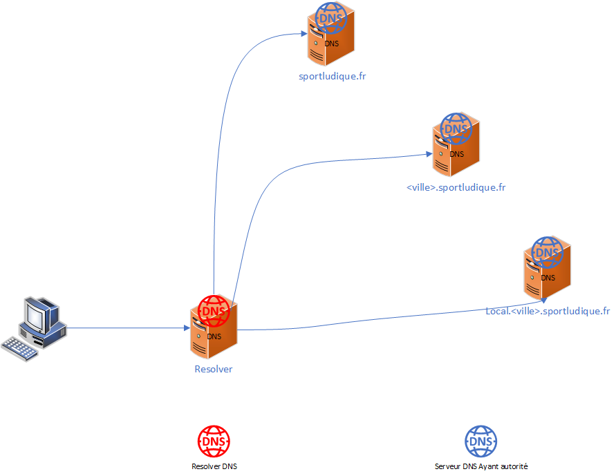

DNS (Domain Name System)
Introduction aux DNS
Les DNS, ou Domain Name System, sont un système fondamental d'Internet qui permet de traduire les noms de domaine en adresses IP et vice-versa. Ils jouent un rôle essentiel dans la navigation sur le Web et la communication entre les appareils connectés à Internet.
Résolveurs DNS
Un résolveur DNS est un logiciel ou un service responsable de la résolution des noms de domaine en adresses IP. Les résolveurs sont généralement utilisés par les appareils clients pour interroger le système DNS et obtenir les adresses IP associées aux noms de domaine.
Serveurs d'autorité
Les serveurs d'autorité sont des serveurs DNS responsables d'une zone DNS particulière. Ils ont la capacité d'autoriser des requêtes pour les noms de domaine dans leur zone respective. Les zones DNS sont généralement définies pour représenter une partie de l'arborescence des noms de domaine, et chaque zone a un serveur d'autorité qui la gère.
Séparation des rôles
La séparation des rôles dans le système DNS est une pratique courante pour garantir la sécurité et la fiabilité. Cette séparation peut être réalisée en utilisant différents serveurs pour les rôles spécifiques, tels que les serveurs de résolution, les serveurs d'autorité et les serveurs de redirection.
Redirecteurs DNS
Les redirecteurs DNS sont des serveurs DNS qui redirigent les requêtes DNS vers d'autres serveurs DNS, généralement les serveurs d'autorité appropriés. Ils sont utiles pour améliorer l'efficacité du système DNS en évitant des requêtes inutiles aux serveurs racine.
Serveurs Racine
Les serveurs racine sont le niveau le plus élevé de la hiérarchie DNS. Ils stockent les informations de base pour l'ensemble du système DNS et sont responsables de renvoyer les requêtes vers les serveurs d'autorité appropriés pour les domaines de premier niveau (TLD) tels que .com, .org, .net, etc.
Délégation des Zones
La délégation des zones est le processus par lequel une autorité parente confie la gestion d'une zone DNS à une autorité enfant. Cela permet de distribuer la responsabilité de la gestion des noms de domaine dans la hiérarchie DNS. Par exemple, le registraire d'un domaine peut déléguer la gestion de la zone DNS à l'hébergeur Web du propriétaire du domaine.
Pour déléguer une zone à un autre serveur DNS (non BIND) à l'aide de BIND comme serveur parent, vous devrez configurer des enregistrements NS pour le sous-domaine délégué dans votre zone parente. Voici comment faire cela :
Supposons que vous utilisez BIND comme serveur DNS principal pour le domaine exemple.com et que vous souhaitez déléguer la gestion du sous-domaine sousdomaine.exemple.com à un autre serveur DNS dont l'adresse IP est 203.0.113.100.
Configuration BIND (zone principale pour exemple.com) :
- Dans le fichier de zone pour
exemple.com, ajoutez les enregistrements NS pour le sous-domaine délégué comme ceci :
; Fichier de zone pour exemple.com (zone publique)
$TTL 3600
@ IN SOA ns1.exemple.com. admin.exemple.com. (
2023091301 ; Numéro de série
3600 ; Intervalle de rafraîchissement
1800 ; Intervalle de réessai
604800 ; Intervalle d'expiration
86400 ) ; Durée minimale de cache
@ IN NS ns1.exemple.com.
@ IN NS ns2.exemple.com.
; Enregistrements IPv4
@ IN A 203.0.113.10
www IN A 203.0.113.20
mail IN A 203.0.113.30
; Délégation du sous-domaine à un autre serveur DNS
sousdomaine.exemple.com. IN NS ns.serveurdns.externe.com.
Notez que dans cet exemple, nous utilisons l'enregistrement NS ns.serveurdns.externe.com pour déléguer la gestion du sous-domaine sousdomaine.exemple.com à un serveur DNS externe. Vous devez remplacer ns.serveurdns.externe.com par le nom de domaine complet du serveur DNS externe qui gérera le sous-domaine.
Configuration sur le serveur DNS externe (ns.serveurdns.externe.com) :
-
Configurez le serveur DNS externe pour répondre aux requêtes pour le sous-domaine
sousdomaine.exemple.com. -
Créez les enregistrements DNS appropriés pour le sous-domaine
sousdomaine.exemple.comsur le serveur DNS externe, par exemple :
; Configuration sur le serveur DNS externe
$TTL 3600
@ IN SOA ns.serveurdns.externe.com. admin.serveurdns.externe.com. (
2023091301 ; Numéro de série
3600 ; Intervalle de rafraîchissement
1800 ; Intervalle de réessai
604800 ; Intervalle d'expiration
86400 ) ; Durée minimale de cache
@ IN NS ns.serveurdns.externe.com.
sousdomaine IN A 203.0.113.100 ; Adresse IP du serveur pour sousdomaine.exemple.com
- Assurez-vous que le serveur DNS externe est configuré pour répondre aux requêtes DNS pour le sous-domaine
sousdomaine.exemple.comet qu'il pointe correctement vers l'adresse IP203.0.113.100.
De cette manière, la gestion du sous-domaine sousdomaine.exemple.com est déléguée au serveur DNS externe ns.serveurdns.externe.com, et ce dernier est responsable de la résolution DNS pour ce sous-domaine. Le serveur BIND gère toujours la zone principale pour exemple.com.
Division des Zones (Privées et Publiques)
Les zones DNS peuvent être divisées en zones privées et publiques. Les zones publiques contiennent des informations accessibles au public, telles que les enregistrements DNS pour un site web. Les zones privées, en revanche, contiennent des informations spécifiques à un réseau privé, comme les enregistrements pour les serveurs internes. La division permet de contrôler l'accès aux informations DNS en fonction des besoins de sécurité.
En conclusion, le DNS est un système fondamental pour le fonctionnement d'Internet. Il repose sur une hiérarchie de serveurs, des résolveurs pour la résolution des requêtes DNS, et la délégation des zones pour gérer la répartition des responsabilités. La compréhension de ces concepts est essentielle pour la gestion efficace des noms de domaine et la gestion des ressources Internet.
Schema de l'infrastructure DNS


DNS Partagé (Split-Horizon DNS) :
Le DNS partagé, également appelé DNS split-horizon, implique d'avoir des vues différentes de l'espace de noms DNS pour les utilisateurs internes et externes. Cela est souvent utilisé pour fournir des réponses DNS différentes en fonction de la provenance de la requête DNS, c'est-à-dire si la requête provient de l'intérieur ou de l'extérieur du réseau local. Pour mettre en œuvre le DNS partagé avec BIND9, vous configurez généralement des vues distinctes dans le fichier de configuration BIND.
Voici un exemple simplifié :
view "interne" {
match-clients { localhost; 172.16.x.0/24; };
zone "exemple.com" {
type master;
file "/etc/bind/db.interne";
};
};
view "externe" {
match-clients { any; };
zone "exemple.com" {
type master;
file "/etc/bind/db.externe";
};
};
Dans cet exemple, les utilisateurs provenant du réseau local (172.16.x.0/24) verront une vue DNS définie par le fichier /etc/bind/db.interne, tandis que les utilisateurs externes verront une vue définie par le fichier /etc/bind/db.externe.
Exemple de configuration
Resolveur DNS
Fichier /etc/bind/named.conf.options
options {
directory "/var/cache/bind";
//Autorise les requetes recursives
recursion yes;
//Liste des réseaux autorisés à interoger le resolver
//Par defaut seul les équipements du meme réseau IP que le serveur peuvent l'interroger.
allow-query {
172.16.x.0/24; //LAN
127.0.0.1; //LOCALHOST
192.168.x.0/24; //DMZ
};
//Desactivation de DNSSec
dnssec-validation no;
//Ecoute sur l'ensemble des interfaces IPv4
listen-on { any; };
};
Fichier /etc/bind/named.conf.local (du resolver)
Les requetes à destination de la zone locale doivent être redirigées vers le serveur DNS de la DMZ en interogeant la vue interne.
zone "ville.sportludique.fr" {
type forward;
forwarders { 192.168.x.y }; // Remplace par l'IP du serveur DNS ayant autorité sur la zone (dans la DMZ)
};
Les requetes à destination de la zone de l'entreprise (sportludique.fr) doivent partir vers le serveur resolver de l'enseignant gérant cette zone.
zone "sportludique.fr" {
type forward;
forwarders { 121.183.90.205; }; // IP du serveur de l'enseignant ayant autorité sur la zone sportludique.fr
};
Toutes les autres requetes sont recursives et interrogent donc les serveurs racines (connu de Bind). Cela permet d'éviter une potentielle censure en utilisant le serveur DNS d'un Opérateur (celui du prof :-) )
Serveur DNS ayant autorité sur la zone ville.sportludique.fr
Fichier /etc/bind/named.conf.local
Il faut choisir la bonne zone en fonction des IP sources via des ACL
//zone externe
view "outside" {
match-clients {
!172.x.x.0/24; //requète de provenant pas du LAN
!192.168.x.0/24; //requète de provenant pas de la DMZ
any; //Toutes les autres adresses
};
zone "ville.sportludique.fr." {
type master;
file "/etc/bind/db.ville.sp.fr.externe";
};
};
view "inside" {
match-clients {
172.x.0.0/24; //requète provenant du LAN
192.168.x.0/24; //requète provenant de la DMZ
};
zone "ville.sportludique.fr." {
type master;
file "/etc/bind/db.ville.sp.fr.interne";
};
};
Attention
Toutes les lignes du fichier named.conf.default-zones doivent être mises en commentaire car ne elles ne sont associées à aucune vue.